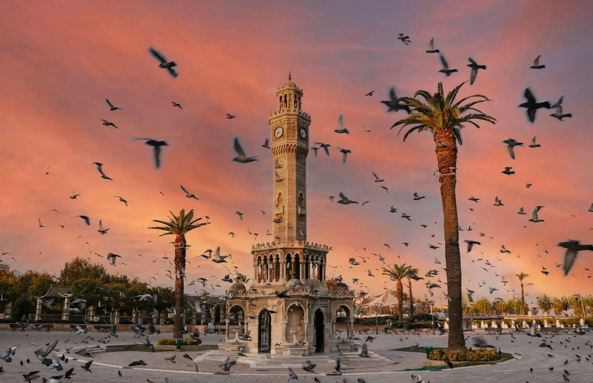

İzmir Saat Kulesi
İzmir Saat Kulesi, Konak Meydanı'nda yer alan ve şehrin sembolü haline gelmiş tarihi bir yapıdır. İzmir denince akla gelen ilk yapılardan biri olması nedeniyle kültürel miras açısından önemli kabul edilir.
Kule, mimari görünümü ve meydandaki konumuyla hem yerli halkın hem de turistlerin sıkça ziyaret ettiği simgesel noktalardan biridir. Konak Meydanı ile birlikte İzmir'in sosyal hayatında da önemli bir yere sahiptir.
Konumu
İzmir'in merkezi noktalarından biri olan Konak Meydanı'nda yer alır.
Mimari Önemi
Zarif taş işçiliği ve detaylı süslemeleriyle dikkat çeken tarihi bir yapıdır.
Şehirdeki Yeri
İzmir'in tanıtımında sıkça kullanılan, şehrin kimliğiyle bütünleşmiş bir semboldür.